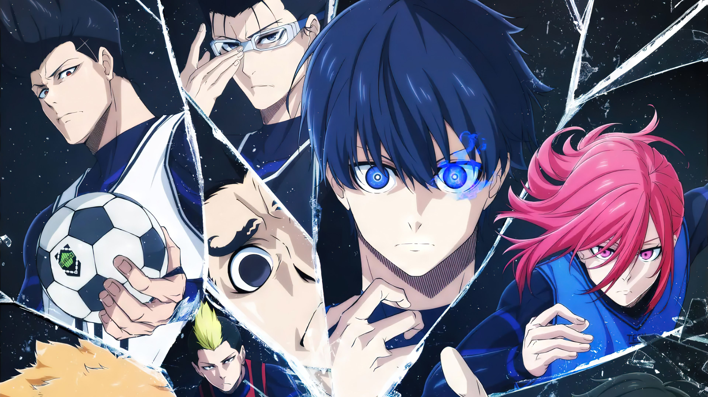

Blue Lock o segundo melhor anime de esportes

Sinipose
Após a eliminação do Japão da Copa do Mundo de 2018, a União Japonesa de Futebol decide revolucionar o futebol do país. Para isso, contrata o excêntrico e enigmático Ego Jinpachi, que cria o projeto "Blue Lock": uma rigorosa e controversa instalação de treinamento que reúne os 300 atacantes adolescentes mais promissores do Japão. O objetivo? Transformar um deles no maior e mais egoísta artilheiro do mundo, capaz de levar o Japão à glória. Entre esses jovens está Yoichi Isagi, um atacante que ainda lida com a frustração de ter falhado em levar seu time escolar ao campeonato nacional. Dentro de Blue Lock, Isagi confronta seus próprios limites e descobre uma nova visão sobre o que significa ser o melhor. A cada desafio, ele enfrenta rivais implacáveis, alianças temporárias e eliminações cruéis, em uma competição onde apenas o mais forte e decidido sobrevive. A primeira temporada acompanha essa intensa jornada de autoconhecimento, rivalidade e superação, enquanto os participantes lutam para não serem eliminados e provarem que possuem o "ego" necessário para se tornar o atacante número um do mundo.